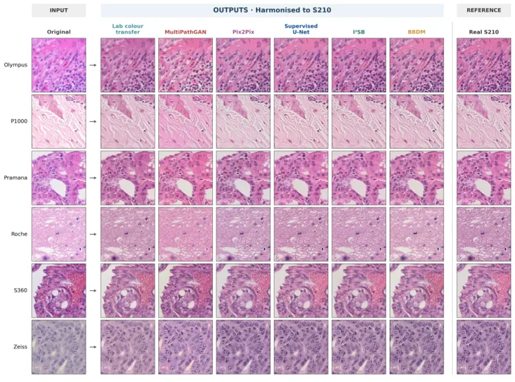

How slide scanners affect digital pathology images, model features, and segmentation.
Image harmonization
I compared image-level colour correction and learned translation, including Lab colour transfer and SMILE, on corresponding regions from different scanners.

Image harmonization comparison from Figure 5.18 of the thesis. The updated ZEISS example below includes SMILE on a separate matched validation region.
Feature harmonization
I also evaluated corrections applied directly to foundation-model embeddings, including statistical alignment and scanner-specific ridge regression.
A The same tissue region across seven scanners. From left to right: Hamamatsu NanoZoomer S210 and S360, Olympus SLIDEVIEW VS200, 3DHISTECH Pannoramic 1000, Pramana Spectral HT-2, ZEISS Axioscan 7 and Roche VENTANA DP 600. B The ZEISS tile from A, shown as original, Lab colour transfer and SMILE, using the NanoZoomer S210 as reference. C Shared 3D PCA projection of original embeddings, mean/SD correction and scanner-specific ridge, from left to right. Blue indicates Olympus SLIDEVIEW VS200 and orange indicates Hamamatsu NanoZoomer S210.
Conclusion
The comparison shows how acquisition differences appear in both tissue images and model features, and how image-level and feature-level correction address different parts of the problem.